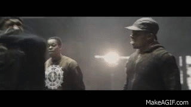
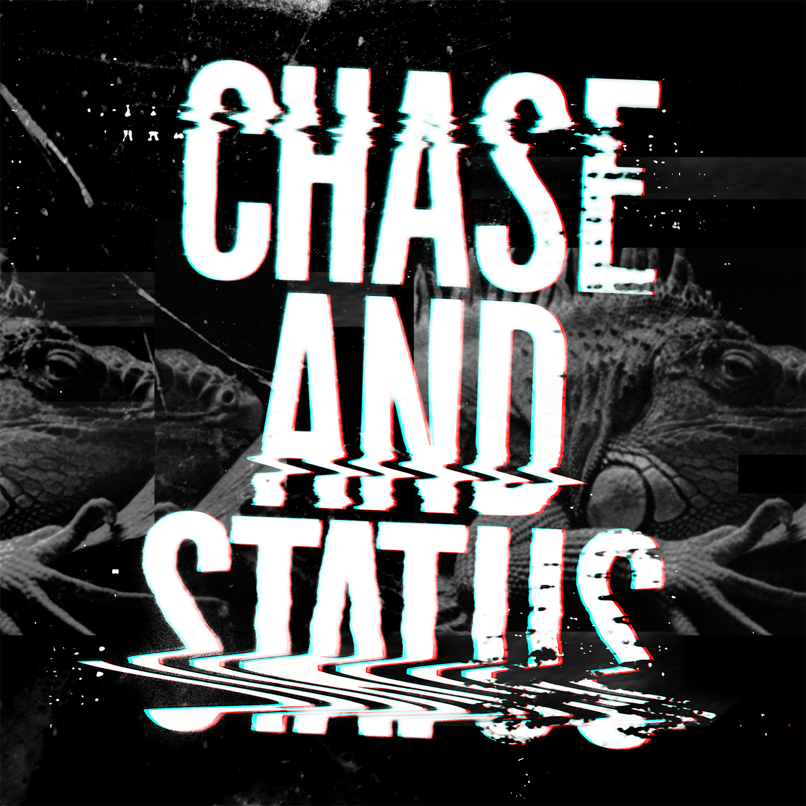
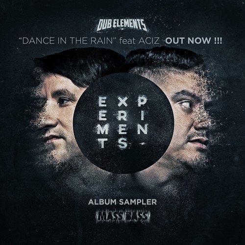
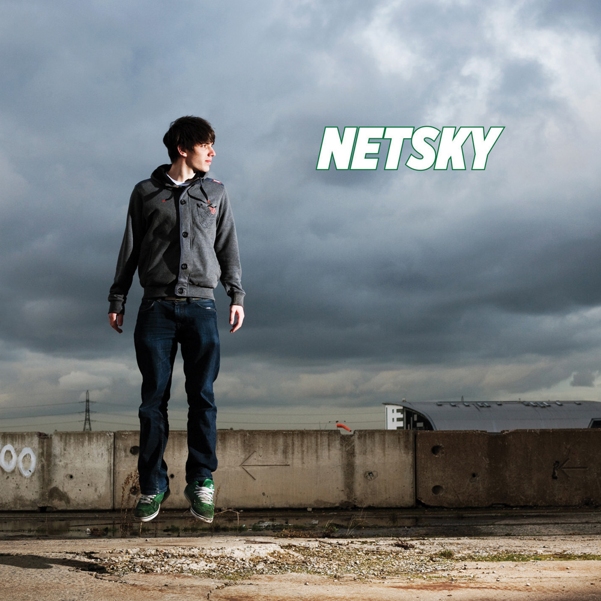
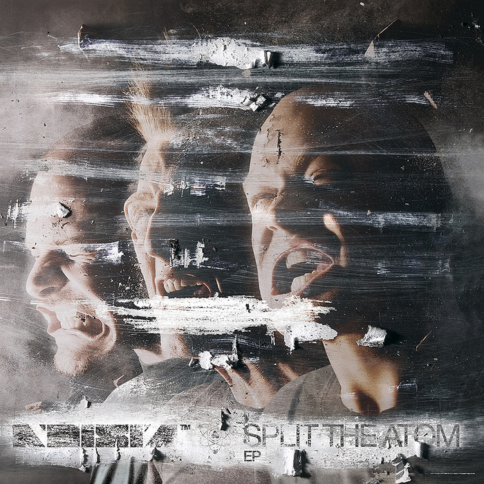
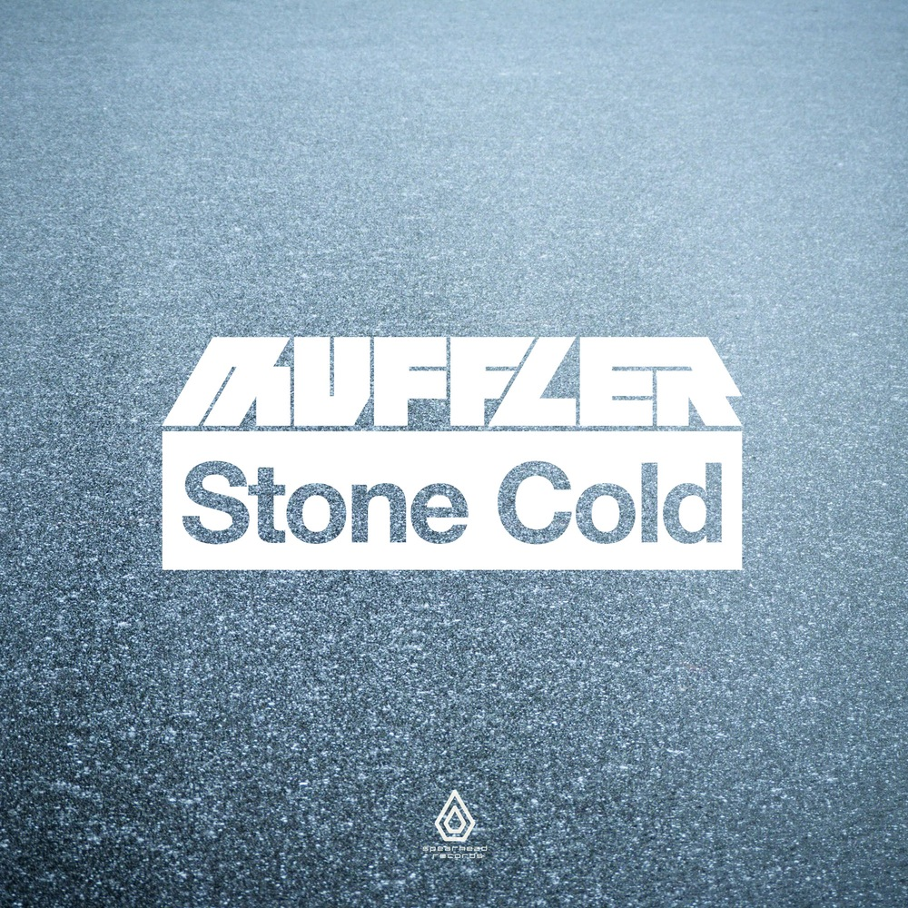

Drum and bass (also written as drum 'n' bass or drum and bass and commonly abbreviated to D&B, DnB or D'n'B) is a genre of electronic music which emerged in England in the early 1990s. The genre is characterized by fast breakbeats (typically between 150–180 beats per minute) with heavy bass and sub-bass lines. The "bass line" is usually created with sampled sources or synthesizers.
The popularity of drum and bass at its commercial peak ran parallel to several other homegrown dance styles in the UK including big beat and hard house. Drum n bass incorporates a number of scenes and styles. A major influence on jungle and drum and bass was the original Jamaican dub and reggae sound. Another feature of the style is the complex syncopation of the drum tracks' breakbeat.
Drum and bass subgenres include breakcore, ragga jungle, hardstep, darkstep, techstep, Neurofunk, ambient drum and bass, liquid funk, deep, drumfunk, funkstep, sambass dnbnoise and drill and bass. From its roots in the UK, the style has established itself around the world. Drum and bass has influenced many other genres like hip hop, big beat, dubstep, house music, trip hop, ambient music, techno, rock and pop.
Drum and bass is dominated by a small group of record labels. The major international music labels have shown very little interest in the drum and bass scene. Drum and Bass remains most popular in the UK, but has developed scenes all around the world, including in The Netherlands, Belgium, New Zealand and Adelaide.
Origins
In the late 1980s and early 1990s, a growing nightclub and overnight outdoor event culture gave birth to a new electronic music style called rave music, which, much like hip-hop, combined sampled syncopated beats or breakbeats, other samples from a wide range of different musical genres and, occasionally, samples of music, dialogue and effects from films and television programmes.
But rave music tended to feature stronger bass sounds and a faster tempo (127 to over 140) beats per minute (BPM) than that of early house music.
This subgenre was known as "hardcore" rave but from as early as 1991, some musical tracks
made up of these high-tempo break beats, with heavy basslines and samples of older Jamaican music, were
referred to as "jungle techno", a genre influenced by Jack Smooth and Basement Records.
Later just "jungle", which became recognized as a separate musical genre popular at
raves and on pirate radio in Britain.
It is important to note when discussing the history of Drum n Bass that prior to Jungle, rave music was getting faster and more experimental. Professional DJ & producer C.K. states, "There was a progression as far as the speed of music is concerned.
Anyone buying vinyl every week from 1989 to 1992 noticed this." Drum and bass incorporates a number of scenes and styles, from the highly electronic, industrial sounds of techstep through to the use of conventional, acoustic instrumentation that characterise the more jazz-influenced end of the spectrum.
The sounds of drum and bass are extremely varied due to the range of influences behind the music.
|
BCee 
|
Chase and Status  |
Dub Elements  |
|
Netsky  |
Noisia  |
Muffler  |